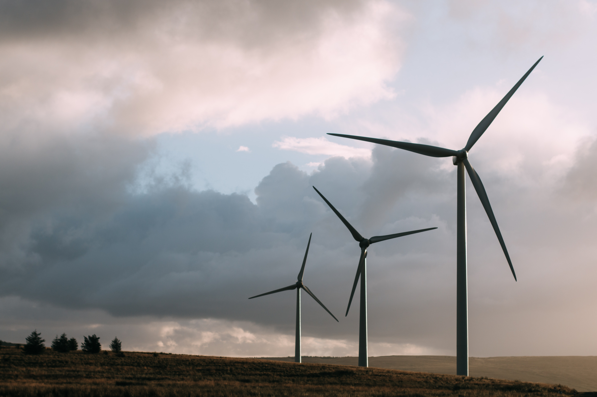
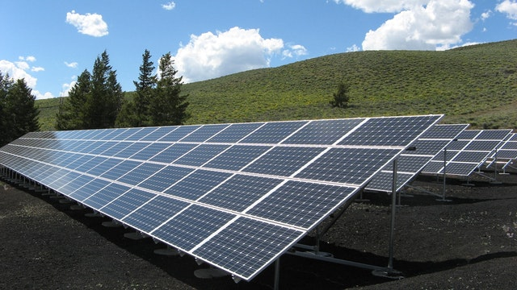

Energia Eólica

Energia Solar

Energia Hidrelétrica
O ODS de número 7 estabelecido pela ONU visa garantir, até 2030, o acesso a uma energia que seja confiável, sustentável, moderna e que tenha um preço acessível para toda a população. Confira abaixo alguns exemplos de energias Renováveis!
Energia Eólica
Energia Solar
Energia Hidrelétrica
Com base em uma estatística de 2019, o Brasil se encontra em 37° lugar no ranking de países com as tarifas energéticas mais caras. Esse dado não é tão alarmante se pensar-mos que no ano de 2015 o Brasil se encontrava na 6° posição do ranking. Mesmo assim, se abusarmos do uso da energia elétrica, o custo será caro.
Para amenizar os custos, especialmente da tarifa energética de sua residência, uma solução seria o investimento em placas solares que
causaria um grande impacto positivo em sua conta de luz.
Entretanto, para este empreendimento é necessário ter um capital significativo,
mas como uma boa parte da população se encontra na classe baixa, a compra de placas fotovoltaicas se torna difícil.
Pensando nisso, elaboramos
alguns tópicos explicativos que podem te ajudar na hora de economizar energia:
• Não fique muito tempo no banho com água quente;
• Durante o dia, opte pela luz natural - abrindo as janelas ao invés de ligar as luzes;
• Troque as lâmpâdas incandescentes por fluorescentes ou de LED;
• Desligar aparelhos elétricos como a TV, o rádio, o modem, o microondas, entre outros, quando não estiverem sendo usados;
• Compre aparelhos com o selo PROCEL;
- Você sabia que existem horários durante o dia em que a energia elétrica é mais barata?
Exato, fora do "Horário de Pico",
que é o nível máximo do consumo da energia (entre 18h e 21h), você pagará mais barato pela energia consumida. Sendo assim, evite ao máximo
usar aparelhos que necessitem do uso de muita energia nesse horário!
O Sétimo ODS ainda tem um longo caminho a ser cumprido, mas com a sua ajuda logo ele poderá ser alcançado! Isso
mesmo, a sua participação nessa meta é fundamental. Quer saber como contribuir? Veja algumas dicas abaixo:
• Opte pelo uso de bicicletas e da caminhada, assim você estará colaborando 100% com o Objetivo;
• Outra forma sustentável é o uso do transporte público ao invés do uso de outros veículos para se locomover;
• Fazer uma placa solar com garrafas pet;
- Caso você tenha interesse existem algumas outras opções disponíveis no mercado:
• Instalação de Energia Eólica Residencial;
• Instalação de Placas Fotovoltaicas;
• Energia Biomassa; (Esta a ser utilizada preferencialmente aos moradores da zona rural).
Viu só? São várias maneiras de você ajudar com essa meta, algumas mais caras outras mais baratas,
mas todas em prol do meio ambiente e do bem estar da população!
Comece hoje mesmo, comente com seus familiares e amigos para que todos
saibam da importância do uso das Energias Renováveis.